<!DOCTYPE html>
<html lang="cn">
<head>
  <meta charset="UTF-8">
<meta name="viewport" content="width=device-width, initial-scale=1, maximum-scale=2">
<meta name="theme-color" content="#222">
<meta name="generator" content="Hexo 5.3.0">
  <link rel="apple-touch-icon" sizes="180x180" href="/images/apple-touch-icon-next.png">
  <link rel="icon" type="image/png" sizes="32x32" href="/images/favicon-32x32-next.png">
  <link rel="icon" type="image/png" sizes="16x16" href="/images/favicon-16x16-next.png">
  <link rel="mask-icon" href="/images/logo.svg" color="#222">

<link rel="stylesheet" href="/css/main.css">

<link rel="stylesheet" href="https://fonts.loli.net/css?family=Noto Serif SC:300,300italic,400,400italic,700,700italic&display=swap&subset=latin,latin-ext">
<link rel="stylesheet" href="/lib/font-awesome/css/all.min.css">

<script id="hexo-configurations">
    var NexT = window.NexT || {};
    var CONFIG = {"hostname":"www.zobinhuang.com","root":"/","scheme":"Pisces","version":"7.8.0","exturl":false,"sidebar":{"position":"left","width":180,"display":"hide","padding":10,"offset":12,"onmobile":false},"copycode":{"enable":false,"show_result":true,"style":"flat"},"back2top":{"enable":true,"sidebar":true,"scrollpercent":true},"bookmark":{"enable":true,"color":"#FF4136","save":"manual"},"fancybox":false,"mediumzoom":false,"lazyload":false,"pangu":false,"comments":{"style":"tabs","active":null,"storage":true,"lazyload":false,"nav":null},"algolia":{"hits":{"per_page":10},"labels":{"input_placeholder":"Search for Posts","hits_empty":"We didn't find any results for the search: ${query}","hits_stats":"${hits} results found in ${time} ms"}},"localsearch":{"enable":false,"trigger":"auto","top_n_per_article":1,"unescape":false,"preload":false},"motion":{"enable":true,"async":false,"transition":{"post_block":"fadeIn","post_header":"slideDownIn","post_body":"slideDownIn","coll_header":"slideLeftIn","sidebar":"slideUpIn"}}};
  </script>

  <meta name="description" content="img{margin-left: 20px; margin-right: 20px;}     #table th{text-align:center;}     #table td{text-align:center;}     p{margin-left: 15px; margin-right: 15px;}     .div_concurrent_img{padding: 10p">
<meta property="og:type" content="website">
<meta property="og:title" content="转移指令 JMP, JCXZ, LOOP, RET 和 CALL">
<meta property="og:url" content="http://www.zobinhuang.com:10082/sec_learning_backup/Tech_OS_And_Linux_Kernel/Assembly_Basic_5_Transition_Command/index.html">
<meta property="og:site_name" content="Zobin">
<meta property="og:description" content="img{margin-left: 20px; margin-right: 20px;}     #table th{text-align:center;}     #table td{text-align:center;}     p{margin-left: 15px; margin-right: 15px;}     .div_concurrent_img{padding: 10p">
<meta property="og:locale">
<meta property="og:image" content="https://i.creativecommons.org/l/by-nc-nd/4.0/88x31.png">
<meta property="og:image" content="http://www.zobinhuang.com:10082/sec_learning_backup/Tech_OS_And_Linux_Kernel/Assembly_Basic_5_Transition_Command/pic/xxx.png">
<meta property="og:image" content="http://www.zobinhuang.com:10082/sec_learning_backup/Tech_OS_And_Linux_Kernel/Assembly_Basic_5_Transition_Command/pic/offset.png">
<meta property="og:image" content="http://www.zobinhuang.com:10082/sec_learning_backup/Tech_OS_And_Linux_Kernel/Assembly_Basic_5_Transition_Command/pic/jmp_1.png">
<meta property="og:image" content="http://www.zobinhuang.com:10082/sec_learning_backup/Tech_OS_And_Linux_Kernel/Assembly_Basic_5_Transition_Command/pic/jmp_2.png">
<meta property="og:image" content="http://www.zobinhuang.com:10082/sec_learning_backup/Tech_OS_And_Linux_Kernel/Assembly_Basic_5_Transition_Command/pic/jmp_4.png">
<meta property="og:image" content="http://www.zobinhuang.com:10082/sec_learning_backup/Tech_OS_And_Linux_Kernel/Assembly_Basic_5_Transition_Command/pic/jmp_3.png">
<meta property="og:image" content="http://www.zobinhuang.com:10082/sec_learning_backup/Tech_OS_And_Linux_Kernel/Assembly_Basic_5_Transition_Command/pic/jmp_5.png">
<meta property="og:image" content="http://www.zobinhuang.com:10082/sec_learning_backup/Tech_OS_And_Linux_Kernel/Assembly_Basic_5_Transition_Command/pic/jmp_6.png">
<meta property="og:image" content="http://www.zobinhuang.com:10082/sec_learning_backup/Tech_OS_And_Linux_Kernel/Assembly_Basic_5_Transition_Command/pic/jmp_7.png">
<meta property="og:image" content="http://www.zobinhuang.com:10082/sec_learning_backup/Tech_OS_And_Linux_Kernel/Assembly_Basic_5_Transition_Command/pic/jmp_8.png">
<meta property="og:image" content="http://www.zobinhuang.com:10082/sec_learning_backup/Tech_OS_And_Linux_Kernel/Assembly_Basic_5_Transition_Command/pic/screen.png">
<meta property="og:image" content="http://www.zobinhuang.com:10082/sec_learning_backup/Tech_OS_And_Linux_Kernel/Assembly_Basic_5_Transition_Command/pic/retf.png">
<meta property="og:image" content="http://www.zobinhuang.com:10082/sec_learning_backup/Tech_OS_And_Linux_Kernel/Assembly_Basic_5_Transition_Command/pic/call_1.png">
<meta property="article:published_time" content="2021-09-07T12:09:29.815Z">
<meta property="article:modified_time" content="2021-09-07T12:09:29.815Z">
<meta property="article:author" content="Zhuobin Huang">
<meta property="article:tag" content="Zobin">
<meta property="article:tag" content="黄卓彬">
<meta property="article:tag" content="zobinHuang">
<meta property="article:tag" content="网络工程">
<meta property="article:tag" content="Networking Engineering">
<meta name="twitter:card" content="summary">
<meta name="twitter:image" content="https://i.creativecommons.org/l/by-nc-nd/4.0/88x31.png">

<link rel="canonical" href="http://www.zobinhuang.com:10082/sec_learning_backup/Tech_OS_And_Linux_Kernel/Assembly_Basic_5_Transition_Command/">


<script id="page-configurations">
  // https://hexo.io/docs/variables.html
  CONFIG.page = {
    sidebar: "",
    isHome : false,
    isPost : false,
    lang   : 'cn'
  };
</script>

  <title>转移指令 JMP, JCXZ, LOOP, RET 和 CALL | Zobin
</title>
  


  <noscript>
  <style>
  .use-motion .brand,
  .use-motion .menu-item,
  .sidebar-inner,
  .use-motion .post-block,
  .use-motion .pagination,
  .use-motion .comments,
  .use-motion .post-header,
  .use-motion .post-body,
  .use-motion .collection-header { opacity: initial; }

  .use-motion .site-title,
  .use-motion .site-subtitle {
    opacity: initial;
    top: initial;
  }

  .use-motion .logo-line-before i { left: initial; }
  .use-motion .logo-line-after i { right: initial; }
  </style>
</noscript>

<link rel="alternate" href="/atom.xml" title="Zobin" type="application/atom+xml">
</head>

<body itemscope itemtype="http://schema.org/WebPage">
  <div class="container use-motion">
    <div class="headband"></div>

    <header class="header" itemscope itemtype="http://schema.org/WPHeader">
      <div class="header-inner"><div class="site-brand-container">
  <div class="site-nav-toggle">
    <div class="toggle" aria-label="تشغيل شريط التصفح">
      <span class="toggle-line toggle-line-first"></span>
      <span class="toggle-line toggle-line-middle"></span>
      <span class="toggle-line toggle-line-last"></span>
    </div>
  </div>

  <div class="site-meta">

    <a href="/" class="brand" rel="start">
      <span class="logo-line-before"><i></i></span>
      <h1 class="site-title">Zobin</h1>
      <span class="logo-line-after"><i></i></span>
    </a>
      <p class="site-subtitle" itemprop="description">Loves Tech & Tea</p>
  </div>

  <div class="site-nav-right">
    <div class="toggle popup-trigger">
    </div>
  </div>
</div>


<nav class="site-nav">
  <ul id="menu" class="main-menu menu">
        <li class="menu-item menu-item-主页">

    <a href="/" rel="section"><i class="fa fa-home fa-fw"></i>主页</a>

  </li>
        <li class="menu-item menu-item-关于">

    <a href="/sec_about/" rel="section"><i class="fa fa-address-card fa-fw"></i>关于</a>

  </li>
        <li class="menu-item menu-item-科研-(research)">

    <a href="/sec_research/" rel="section"><i class="fa fa-atom fa-fw"></i>科研 (Research)</a>

  </li>
        <li class="menu-item menu-item-项目">

    <a href="/sec_project" rel="section"><i class="fa fa-user-cog fa-fw"></i>项目</a>

  </li>
        <li class="menu-item menu-item-知识库">

    <a href="/sec_learning" rel="section"><i class="fa fa-book-open fa-fw"></i>知识库</a>

  </li>
        <li class="menu-item menu-item-每周大盘">

    <a href="/sec_weekly" rel="section"><i class="fa fa-newspaper fa-fw"></i>每周大盘</a>

  </li>
        <li class="menu-item menu-item-实习与助教">

    <a href="/sec_internship" rel="section"><i class="fa fa-people-arrows fa-fw"></i>实习与助教</a>

  </li>
        <li class="menu-item menu-item-进度">

    <a href="/sec_schedule" rel="section"><i class="fa fa-calendar-alt fa-fw"></i>进度</a>

  </li>
        <li class="menu-item menu-item-随笔">

    <a href="/sec_essay" rel="section"><i class="fa fa-mug-hot fa-fw"></i>随笔</a>

  </li>
        <li class="menu-item menu-item-独立音乐人">

    <a href="/sec_music" rel="section"><i class="fa fa-music fa-fw"></i>独立音乐人</a>

  </li>
  </ul>
</nav>


</div>
    </header>

    
  <div class="reading-progress-bar"></div>
  <a role="button" class="book-mark-link book-mark-link-fixed"></a>


    <main class="main">
      <div class="main-inner">
        <div class="content-wrap">
          
  
  

          <div class="content page posts-expand">
            

    
    
    
    <div class="post-block" lang="cn">
      <header class="post-header">

<h1 class="post-title" itemprop="name headline">转移指令 JMP, JCXZ, LOOP, RET 和 CALL
</h1>

<div class="post-meta">
  
  <ul class="breadcrumb">
          
            <li><a href="/sec_learning_backup/">SEC_LEARNING_BACKUP</a></li>
            <li><a href="/sec_learning_backup/Tech_OS_And_Linux_Kernel/">TECH_OS_AND_LINUX_KERNEL</a></li>
          <li>ASSEMBLY_BASIC_5_TRANSITION_COMMAND</li>
        
  </ul>

</div>

</header>

      
      
      
      <div class="post-body">
          <head>
<style>
    img{margin-left: 20px; margin-right: 20px;}
    #table th{text-align:center;}
    #table td{text-align:center;}
    p{margin-left: 15px; margin-right: 15px;}
    .div_concurrent_img{padding: 10px 10px; display: flex; align-items:center; justify-content:center;}
    @media(max-width: 768px) {
      .div_concurrent_img{flex-direction: column;}
    }
    .div_catalogue{padding: 10px 10px; font-size: 16px; background-color: #E0E0E0; word-spacing:0px;  border:1px solid black; border-radius: 10px;}
    .div_licence{font-size: 16px; word-spacing:0px; border:1px solid black;}
    .div_learning_post{font-size: 16px; word-spacing:0px;}
    .div_indicate_source{font-size: 18px; word-spacing:0px; background-color: #E0E0E0;}
    .div_learning_post_boder{padding: 10px 10px; font-size: 16px; word-spacing:0px;  border:1px solid black;}
</style>

<!--支持网页公式显示-->    
<script type="text/javascript" src="https://cdn.mathjax.org/mathjax/latest/MathJax.js?config=AM_HTMLorMML-full"></script>
<!--支持矩阵显示-->
<script type="text/javascript">
  run_maths = function() {
    if (document.querySelector('[class*="cmath"]') !== null) {
      if (typeof (mjax_path)=='undefined') { mjax_path='https://cdn.jsdelivr.net/npm/mathjax@2'; }
      if (typeof (mjax_config)=='undefined') { mjax_config='AM_CHTML'; }
      smjax = document.createElement ('script');
      smjax.setAttribute('src',`${mjax_path}/MathJax.js?config=${mjax_config}`);
      smjax.setAttribute('async',true);
      document.getElementsByTagName('head')[0].appendChild(smjax);
    }
  };
  if (document.readyState === 'loading') {  
    window.addEventListener('DOMContentLoaded', run_maths); 
  } else { 
    run_maths(); 
  }
</script>
</head>

<body>

<div align="center" class="div_indicate_source">
  <h4>⚠ 转载请注明出处：<font color="red"><i>作者：ZobinHuang，更新日期：July.15 2021</i></font></h4>
</div>

<div class="div_licence">
  <br>
  <div align="center">
      <a rel="license noopener" target="_blank" href="http://creativecommons.org/licenses/by-nc-nd/4.0/"></a>
  </div>
  <p>
  &nbsp;&nbsp;&nbsp;&nbsp;本<span xmlns:dct="http://purl.org/dc/terms/" href="http://purl.org/dc/dcmitype/Text" rel="dct:type">作品</span>由 <span xmlns:cc="http://creativecommons.org/ns#" property="cc:attributionName"><b>ZobinHuang</b></span> 采用 <a rel="license noopener" target="_blank" href="http://creativecommons.org/licenses/by-nc-nd/4.0/"><font color="red">知识共享署名-非商业性使用-禁止演绎 4.0 国际许可协议</font></a> 进行许可，在进行使用或分享前请查看权限要求。若发现侵权行为，会采取法律手段维护作者正当合法权益，谢谢配合。
  </p>
</div>

<!--表格-->
<!--
<table border="1" align="center" bgcolor="#FFFFFF">
  <caption>表格</caption>
  <tr>
    <th>A</th>
    <th>B</th>
    <th>C</th>
  </tr>
  <tr>
    <td>xxx</td>
    <td>xxx</td>
    <td>xxx</td>
  </tr>
</table>
-->

<!--矩阵公式-->
<!--
<div class="cmath" align="center">
  `((1, 0),(1, 0))`
</div>
-->

<!--图片-->
<!--
<div align="center">
  
</div>
-->

<!--正文-->
<!--
<p>
&nbsp;&nbsp;&nbsp;&nbsp;公式：<span>`\overline{A}\overline{B}`</span>
</p>
-->

<br>

<div class="div_catalogue">
  <div align="center">
    <h2> 目录 </h2>
    <p>
    <font size="2px">有特定需要的内容直接跳转到相关章节查看即可。</font>
  </div>
  <div class="div_learning_post_boder">
    <p>
    &nbsp;&nbsp;&nbsp;&nbsp;Section 1. <a href="#1_offset"><font color="blue"><b>OFFSET 伪指令</b></font></a>：在 MASM 风格的汇编代码中，我们可以使用 OFFSET 伪指令获取偏移地址
    <p>
    &nbsp;&nbsp;&nbsp;&nbsp;Section 2. <a href="#2_jmp"><font color="blue"><b>jmp 无条件跳转指令</b></font></a>：介绍了 jmp 指令的来龙去脉
    <br>&nbsp;&nbsp;&nbsp;&nbsp;&nbsp;&nbsp;&nbsp;&nbsp;2.1 <a href="#2_jmp_1"><font color="blue">跳转指令原理</font></a>：通过分析 jmp 指令编译后的机器码，剖析了 jmp 指令的原理
    <br>&nbsp;&nbsp;&nbsp;&nbsp;&nbsp;&nbsp;&nbsp;&nbsp;2.2 <a href="#2_jmp_2"><font color="blue">跳转范围</font></a>：介绍了使用 jmp 指令进行 8 位位移和 16 位位移的方法
    <br>&nbsp;&nbsp;&nbsp;&nbsp;&nbsp;&nbsp;&nbsp;&nbsp;2.3 <a href="#2_jmp_3"><font color="blue">一个奇怪的例子</font></a>：通过一个比较奇怪的例子总结理解 jmp 指令的用法
    <br>&nbsp;&nbsp;&nbsp;&nbsp;&nbsp;&nbsp;&nbsp;&nbsp;2.4 <a href="#2_jmp_4"><font color="blue">段间转移 (远转移)</font></a>：描述了如何使用 jmp far ptr 指令进行段间转移
    <br>&nbsp;&nbsp;&nbsp;&nbsp;&nbsp;&nbsp;&nbsp;&nbsp;2.5 <a href="#2_jmp_5"><font color="blue">转移地址在内存、寄存器中的 jmp 指令</font></a>：介绍了 jmp 的操作数存储在寄存器、内存中的情况
    <br>&nbsp;&nbsp;&nbsp;&nbsp;&nbsp;&nbsp;&nbsp;&nbsp;2.6 <a href="#2_jmp_6"><font color="blue">根据标志位寄存器进行跳转的指令</font></a>：介绍了 根据标志位寄存器中的特定标志位进行跳转的跳转指令
    <p>
    &nbsp;&nbsp;&nbsp;&nbsp;Section 3. <a href="#3_jcxz"><font color="blue"><b>jcxz 条件跳转指令</b></font></a>：介绍了 jcxz 指令的用法，并且列举了一个例子
    <p>
    &nbsp;&nbsp;&nbsp;&nbsp;Section 4. <a href="#4_loop"><font color="blue"><b>loop 条件跳转指令</b></font></a>：介绍了 loop 指令的用法
    <p>
    &nbsp;&nbsp;&nbsp;&nbsp;Section 5. <a href="#5_motivation"><font color="blue"><b>为什么要用位移来做跳转</b></font></a>：总结了使用位移来做跳转的 motivation
    <p>
    &nbsp;&nbsp;&nbsp;&nbsp;Section 6. <a href="#6_example"><font color="blue"><b>实验：向显存中写入数据</b></font></a>：一个将数据写入显存从而在屏幕上进行显示的例子
    <p>
    &nbsp;&nbsp;&nbsp;&nbsp;Section 7. <a href="#7_ret"><font color="blue"><b>RET 和 RETF 指令</b></font></a>：介绍了从栈段中获取地址修改 CS 和 IP 寄存器的方法
    <p>
    &nbsp;&nbsp;&nbsp;&nbsp;Section 8. <a href="#8_call"><font color="blue"><b>CALL 指令</b></font></a>：介绍了基于 CALL 指令的将代码根据不同逻辑进行切割的方法
    <br>&nbsp;&nbsp;&nbsp;&nbsp;&nbsp;&nbsp;&nbsp;&nbsp;8.1 <a href="#8_call_1"><font color="blue">CALL 指令的运行流程</font></a>：介绍了 CALL 指令的运行流程，分析了编译后的机器码
    <br>&nbsp;&nbsp;&nbsp;&nbsp;&nbsp;&nbsp;&nbsp;&nbsp;8.2 <a href="#8_call_2"><font color="blue">CALL 跳转地址在寄存器中的情况</font></a>：分析了 CALL 指令的操作数在寄存器中的情况
    <br>&nbsp;&nbsp;&nbsp;&nbsp;&nbsp;&nbsp;&nbsp;&nbsp;8.3 <a href="#8_call_3"><font color="blue">CALL 跳转地址在内存中的情况</font></a>：分析了 CALL 指令的操作数在内存中的情况
    <br>&nbsp;&nbsp;&nbsp;&nbsp;&nbsp;&nbsp;&nbsp;&nbsp;8.4 <a href="#8_call_4"><font color="blue">CALL 和 RET 的配合使用</font></a>：将 CALL 和 RET 指令搭配使用，可以获得 "函数" 的功能
    <br>&nbsp;&nbsp;&nbsp;&nbsp;&nbsp;&nbsp;&nbsp;&nbsp;8.5 <a href="#8_call_5"><font color="blue">寄存器旧值保护</font></a>：介绍了在 "函数调用" 时，保护函数内部使用到的寄存器的旧值的方法
  </div>
</div>

<h2><a name="1_offset">1. OFFSET 伪指令</a></h2>
<div class="div_learning_post">
  <p>
  &nbsp;&nbsp;&nbsp;&nbsp;我们可以使用 OFFSET 伪指令来获取某个位置的偏移。考虑下面代码：

  <figure class="highlight plain"><table><tr><td class="gutter"><pre><span class="line">1</span><br><span class="line">2</span><br><span class="line">3</span><br><span class="line">4</span><br><span class="line">5</span><br><span class="line">6</span><br><span class="line">7</span><br><span class="line">8</span><br><span class="line">9</span><br><span class="line">10</span><br><span class="line">11</span><br></pre></td><td class="code"><pre><span class="line">code segment</span><br><span class="line">    start:  mov ax, stack</span><br><span class="line">            mov ss, ax</span><br><span class="line">            mov sp, 128</span><br><span class="line"></span><br><span class="line">    s:      mov ax, OFFSET start</span><br><span class="line">            mov ax, OFFSET s</span><br><span class="line"></span><br><span class="line">            mov ax, 4C00H</span><br><span class="line">            int 21H</span><br><span class="line">code ends</span><br></pre></td></tr></table></figure>

  <p>
  &nbsp;&nbsp;&nbsp;&nbsp;运行到 Line 7 时，我们往 AX 寄存器中写入的是 s 处在代码段中的偏移，如下图所示：

  <div align="center">
    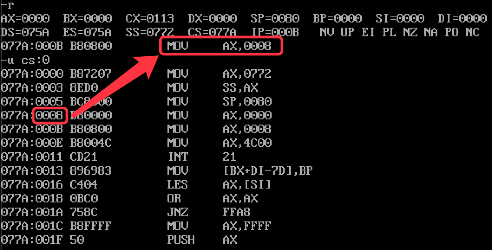
  </div>
</div>

<h2><a name="2_jmp">2. jmp 无条件跳转指令</a></h2>
<div class="div_learning_post">
  <h3><a name="2_jmp_1">2.1 跳转指令原理</a></h3>
  <p>
  &nbsp;&nbsp;&nbsp;&nbsp;我们写一个 jmp 指令的源码如下

  <figure class="highlight bash"><table><tr><td class="gutter"><pre><span class="line">1</span><br><span class="line">2</span><br><span class="line">3</span><br><span class="line">4</span><br><span class="line">5</span><br><span class="line">6</span><br><span class="line">7</span><br><span class="line">8</span><br><span class="line">9</span><br><span class="line">10</span><br><span class="line">11</span><br><span class="line">12</span><br><span class="line">13</span><br><span class="line">14</span><br><span class="line">15</span><br><span class="line">16</span><br><span class="line">17</span><br></pre></td><td class="code"><pre><span class="line">code segment</span><br><span class="line">    start:  mov ax, stack</span><br><span class="line">            mov ss, ax</span><br><span class="line">            mov sp, 128</span><br><span class="line"></span><br><span class="line">            jmp s</span><br><span class="line"></span><br><span class="line">            mov ax, 0001H</span><br><span class="line">            mov ax, 0002H</span><br><span class="line">            mov ax, 0003H</span><br><span class="line">    </span><br><span class="line">    s:      mov bx, 0004H      </span><br><span class="line"></span><br><span class="line"></span><br><span class="line">            mov ax, 4C00H</span><br><span class="line">            int 21H</span><br><span class="line">code ends</span><br></pre></td></tr></table></figure>

  <p>
  &nbsp;&nbsp;&nbsp;&nbsp;然后观察编译后的机器码：

  <div align="center">
    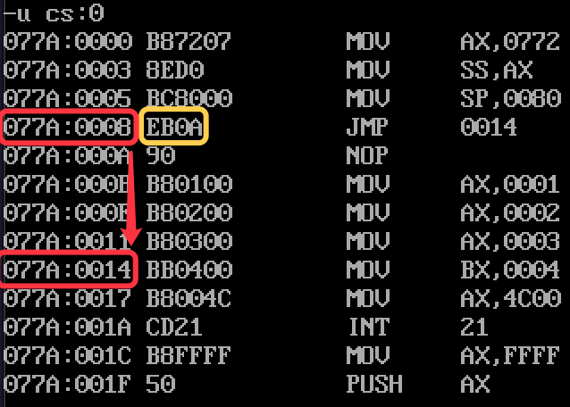
  </div>

  <p>
  &nbsp;&nbsp;&nbsp;&nbsp;我们可以看见机器码的尾部是 0A，即十进制 10。这里的含义是向后跳转 10 个字节，到 007A:0014 位置。也就是说，这里编译后 jmp 的机器码中包含的信息是向后跳转多少个字节。jmp 指令通过将这个数与 IP 寄存器相加，就能够修改 IP 寄存器的值，然后跳转到相应位置。

  <p>
  &nbsp;&nbsp;&nbsp;&nbsp;我们现在过一下整个指令的执行流程：
  <ol>
    <li>CS:077A IP:0008，CS:IP 指向 EB 0A (jmp s 对应的机器码)</li>
    <li>读取指令码 EB 0A 进入指令寄存器</li>
    <li>IP = IP + 所取指令长度 = IP + 2 = 000A</li>
    <li>CPU 执行指令缓冲器中的指令 EB 0A</li>
    <li>执行 EB 0A 后，IP = IP + 0A = 000A + 0A = 14</li>
  </ol>

  <p>
  &nbsp;&nbsp;&nbsp;&nbsp;然后，我们现在观察一下，如果 jmp 指令是向前跳跃，会是什么情况：

  <figure class="highlight bash"><table><tr><td class="gutter"><pre><span class="line">1</span><br><span class="line">2</span><br><span class="line">3</span><br><span class="line">4</span><br><span class="line">5</span><br><span class="line">6</span><br><span class="line">7</span><br><span class="line">8</span><br><span class="line">9</span><br><span class="line">10</span><br><span class="line">11</span><br><span class="line">12</span><br><span class="line">13</span><br><span class="line">14</span><br><span class="line">15</span><br><span class="line">16</span><br></pre></td><td class="code"><pre><span class="line">code segment</span><br><span class="line">    start:  mov ax, stack</span><br><span class="line">            mov ss, ax</span><br><span class="line">            mov sp, 128</span><br><span class="line"></span><br><span class="line">            jmp start</span><br><span class="line"></span><br><span class="line">            mov ax, 0001H</span><br><span class="line">            mov ax, 0002H</span><br><span class="line">            mov ax, 0003H</span><br><span class="line">    </span><br><span class="line">    s:      mov bx, 0004H      </span><br><span class="line"></span><br><span class="line">            mov ax, 4C00H</span><br><span class="line">            int 21H</span><br><span class="line">code ends</span><br></pre></td></tr></table></figure>
  <p>
  &nbsp;&nbsp;&nbsp;&nbsp;然后我们查看一下机器码：

  <div align="center">
    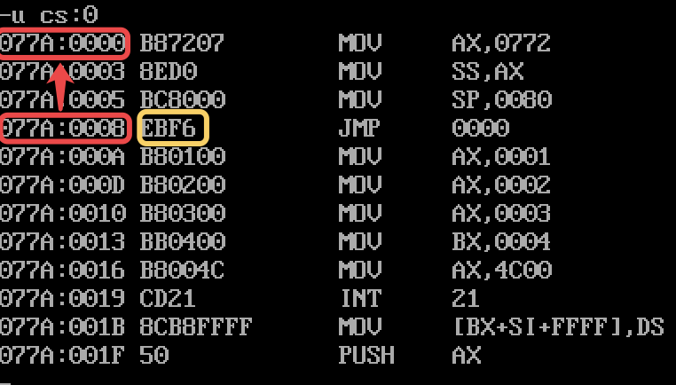
  </div>

  <p>
  &nbsp;&nbsp;&nbsp;&nbsp;这里我们发现 jmp 在机器码后跟的数是 F6。这里运用到了补码的概念，不了解的同学可以查看我的另一篇文章 <a href="/sec_learning/Tech_Computer_Architerture/Digtal_And_Compter_Arch_Basic_3_Number_System/index.html">数值系统</a>。简单来说，jmp 指令其实等价于 jmp short 指令，用于指出对 IP 寄存器进行 <font color="blue">8位位移</font>。IP 中的值 0008+2(所取指令长度)=000A 在加上 F6 后，低八位发生溢出，截断后的值为 0000，因此 IP 寄存器就又指向了 start 处。

  <h3><a name="2_jmp_2">2.2 跳转范围</a></h3>
  <p>
  &nbsp;&nbsp;&nbsp;&nbsp;我们在上一章中看到了 jmp 或 jmp short 指令实现的 8 位位移效果。8 位位移使得 jmp 指令的有效跳转范围是  -128~127。jmp 指令还支持 16 位位移，即有效跳转范围为 -32768~32767。我们看下面这段代码：

  <figure class="highlight bash"><table><tr><td class="gutter"><pre><span class="line">1</span><br><span class="line">2</span><br><span class="line">3</span><br><span class="line">4</span><br><span class="line">5</span><br><span class="line">6</span><br><span class="line">7</span><br><span class="line">8</span><br><span class="line">9</span><br><span class="line">10</span><br><span class="line">11</span><br><span class="line">12</span><br></pre></td><td class="code"><pre><span class="line">code segment</span><br><span class="line">    start:  mov ax, stack</span><br><span class="line">            mov ss, ax</span><br><span class="line">            mov sp, 128</span><br><span class="line"></span><br><span class="line">            db  130 dup(0)</span><br><span class="line"></span><br><span class="line">            jmp start</span><br><span class="line">    </span><br><span class="line">            mov ax, 4C00H</span><br><span class="line">            int 21H</span><br><span class="line">code ends</span><br></pre></td></tr></table></figure>
  <p>
  &nbsp;&nbsp;&nbsp;&nbsp;明显地，由于我们在 Line 6 的位置插入了 130 个字节，如果仍然是 8 位位移，我们的 jmp 指令是跳不回 start 处的。我们来看一下机器码：

  <div class="div_concurrent_img">
    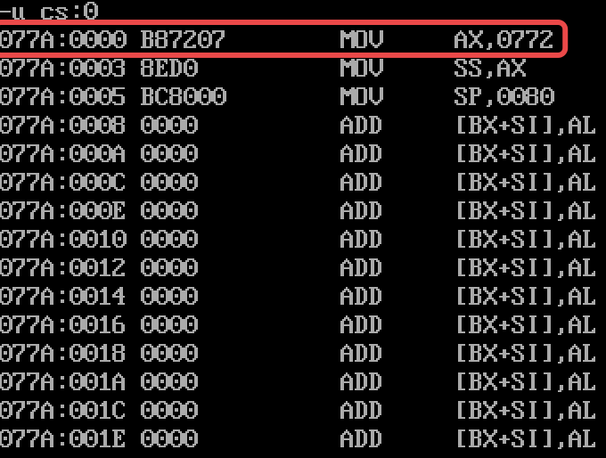
    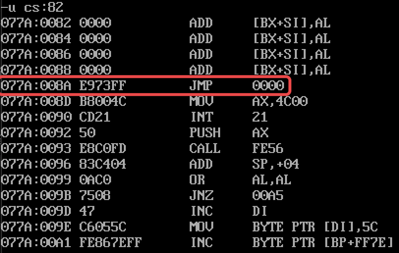
  </div>

  <p>
  &nbsp;&nbsp;&nbsp;&nbsp;如上第二张图所示，我们发现机器码已经自动地变成了 <font color="blue">16位位移</font> 的形式，我们可以计算一下：

  <div align=center>
    当前 IP 值 + 2 + 跳转值 = 008AH + 0003H + FF73H = 10000H
  </div>

  <p>
  &nbsp;&nbsp;&nbsp;&nbsp;这样一来我们发现，当 jmp 指令会自动根据跳转的举例来变更跳转的形式(i.e. 8 位位移或者16 位位移)。我们也可以显式地指出 jmp 指令的跳转范围，"<font color="blue">jmp short</font>" 指代 8 位位移(<font color="blue"><b>段内短转移</b></font>)，"<font color="blue">jmp near ptr</font>" 指代 16 位位移(<font color="blue"><b>段内近转移</b></font>)。注意到这两种转移都是<font color="blue">段内转移</font>，也就是说 jmp 指令只会去修改 IP 寄存器中的值，而不会去修改 CS 寄存器中的值。

  <h3><a name="2_jmp_3">2.3 一个奇怪的例子</a></h3>

  <p>
  &nbsp;&nbsp;&nbsp;&nbsp;我们下面通过一个奇怪的例子，来小结 jmp 指令的用法：

  <figure class="highlight bash"><table><tr><td class="gutter"><pre><span class="line">1</span><br><span class="line">2</span><br><span class="line">3</span><br><span class="line">4</span><br><span class="line">5</span><br><span class="line">6</span><br><span class="line">7</span><br><span class="line">8</span><br><span class="line">9</span><br><span class="line">10</span><br><span class="line">11</span><br><span class="line">12</span><br><span class="line">13</span><br><span class="line">14</span><br><span class="line">15</span><br><span class="line">16</span><br><span class="line">17</span><br><span class="line">18</span><br><span class="line">19</span><br><span class="line">20</span><br><span class="line">21</span><br><span class="line">22</span><br></pre></td><td class="code"><pre><span class="line">code segment</span><br><span class="line">    s5:     mov ax, 4C00H</span><br><span class="line">            int 21H</span><br><span class="line"></span><br><span class="line">    start:  mov ax, 0</span><br><span class="line">    s:      nop   <span class="comment"># CPU 遇到 nop 指令，什么行为都不发生。nop 指令占用一个字节</span></span><br><span class="line">            nop</span><br><span class="line"></span><br><span class="line">    s4:     mov di, OFFSET s</span><br><span class="line">            mov si, OFFSET s2</span><br><span class="line">            mov ax, cs:[si] </span><br><span class="line">            mov cs:[di], ax <span class="comment"># 将 jmp short s1 指令复制到 s 处</span></span><br><span class="line"></span><br><span class="line">    s0:     jmp short s</span><br><span class="line"></span><br><span class="line">    s1:     mov ax, 0</span><br><span class="line">            int 21H</span><br><span class="line">            mov ax, 0</span><br><span class="line"></span><br><span class="line">    s2:     jmp short s1</span><br><span class="line">    s3:     nop</span><br><span class="line">code ends</span><br></pre></td></tr></table></figure>
  <p>
  &nbsp;&nbsp;&nbsp;&nbsp;程序运行起来后，会首先在 s4 处的代码将 s2 处的代码 "jmp short s1" (两个字节) 拷贝到 s 处，然后会执行 jmp s 的指令。到了 s 的时候，实际上 nop 所占用的两个字节现在已经是 jmp short s1 指令。由于我们上面发现了 jmp 指令在被翻译成机器码的时候，使用的是相对位移来对 IP 寄存器做计算，所以我们现在好奇 jmp short s1 所对应的机器码是多少，以及如果在 s 处运行这段机器码，程序将跳到哪里去。

  <p>
  &nbsp;&nbsp;&nbsp;&nbsp;我们现在 来到 s2 处的指令，我们通过像上面一节的计算方法一样计算一下此处的机器码的值：

  <div align="center">
    跳转原地址 - 跳转目的地址 = (s2 + 0002H) - s1 = -10 = F6
  </div>

  <p>
  &nbsp;&nbsp;&nbsp;&nbsp;因此，当 EB F6 指令被拷贝到 s 处后，其在 s 处运行的效果也是向前跳 10 个字节，因此我们刚刚好最终会来到 s5 处的代码，s5 处的代码其实就是程序返回退出的代码。因此整段程序运行之后，这个代码段是可以正常退出的。

  <h3><a name="2_jmp_4">2.4 段间转移 (远转移)</a></h3>
  <p>
  &nbsp;&nbsp;&nbsp;&nbsp;jmp 指令还可以直接跳转到另一个段中，也即 <font color="blue"><b>段间转移(远转移)</b></font>。思考一下可以发现，如果要实现段间转移，则 jmp 指令后跟的立即数应该得有 32 位，其中 16 位是段基地址，另外 16 位是段内偏移地址。在汇编代码中，远转移的形式是 "<font color="blue">jmp far ptr + 标号</font>"，如下面的例子：

  <figure class="highlight bash"><table><tr><td class="gutter"><pre><span class="line">1</span><br><span class="line">2</span><br><span class="line">3</span><br><span class="line">4</span><br><span class="line">5</span><br><span class="line">6</span><br><span class="line">7</span><br><span class="line">8</span><br><span class="line">9</span><br><span class="line">10</span><br><span class="line">11</span><br><span class="line">12</span><br><span class="line">13</span><br></pre></td><td class="code"><pre><span class="line">code segment</span><br><span class="line">    start:  mov ax, data</span><br><span class="line">            mov ds, ax</span><br><span class="line"></span><br><span class="line">            jmp far ptr s</span><br><span class="line"></span><br><span class="line">            db 130 dup(0)</span><br><span class="line"></span><br><span class="line">    s:      mov ax, 0</span><br><span class="line"></span><br><span class="line">            mov ax, 4c00H</span><br><span class="line">            int 21H</span><br><span class="line">code ends</span><br></pre></td></tr></table></figure>
  <p>
  &nbsp;&nbsp;&nbsp;&nbsp;我们可以查看一下机器码：

  <div class="div_concurrent_img">
    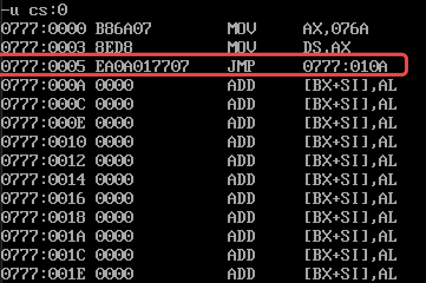
    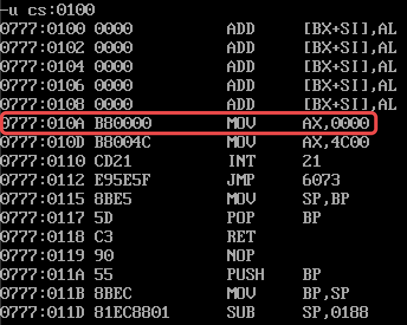
  </div>

  <p>
  &nbsp;&nbsp;&nbsp;&nbsp;我们发现 jmp 指令机器码中，后面跟的立即数就是 32 位目的地址0777:010A 的值。

  <h3><a name="2_jmp_5">2.5 转移地址在内存、寄存器中的 jmp 指令</a></h3>
  <p>
  &nbsp;&nbsp;&nbsp;&nbsp;除了在 jmp 指令后加上跳转标签，我们也可以让 jmp 指令根据内存单元/寄存器中存储的地址进行跳转。

  <p>
  &nbsp;&nbsp;&nbsp;&nbsp;对于基于寄存器跳转，jmp 指令将寄存器中的值赋值给 IP 寄存器。注意此处的寄存器只能是 16 位寄存器，也就是说只能进行16 位跳转，也即仅支持段内转移，我们在 <a href="/sec_learning/Tech_OS_And_Linux_Kernel/Assembly_Basic_2_Register/index.html">寄存器和基本操作指令</a> 中有相关的例子。

  <p>
  &nbsp;&nbsp;&nbsp;&nbsp;对于基于内存单元跳转，不同的是，<b>基于内存单元的跳转可以支持 both 段内转移 和 段间转移</b>。

  <p>
  &nbsp;&nbsp;&nbsp;&nbsp;对于段内转移，jmp 指令的形式是 "jmp word ptr [内存单元地址]"，例子如下所示：

  <div align="center">
    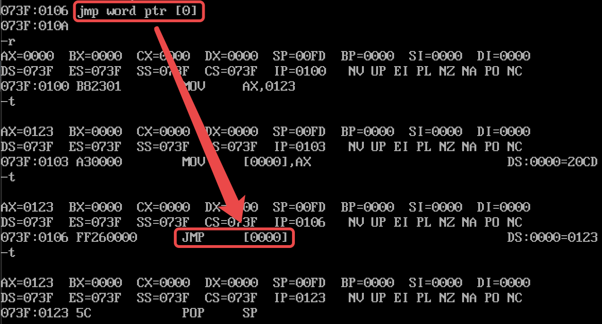
  </div>

  <p>
  &nbsp;&nbsp;&nbsp;&nbsp;对于段间转移，jmp 指令的形式是 "jmp dword ptr [内存单元地址]"。在运行这个命令时，从这个内存地址处开始应该存放着两个 word，jmp 指令会以高地址处的 word 为目的段地址(CS)，低地址处的 word 为目的段内偏移地址(IP) 进行转移。例子如下所示：

  <div align="center">
    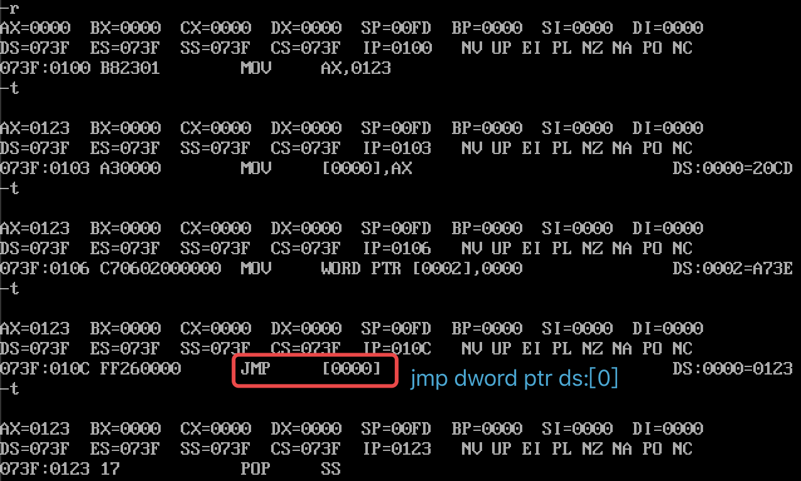
  </div>

  <div class="div_learning_post_boder">
  <div align="center"><h3>尝试使用 jmp 实现 "函数调用"</h3></div>
  <p>
  &nbsp;&nbsp;&nbsp;&nbsp;这里基于我们在本小节所学习的从内存中获取地址进行跳转的机制，我们可以尝试实现一个简单的类似 "函数调用" 功能，如下所示：

  <figure class="highlight bash"><table><tr><td class="gutter"><pre><span class="line">1</span><br><span class="line">2</span><br><span class="line">3</span><br><span class="line">4</span><br><span class="line">5</span><br><span class="line">6</span><br><span class="line">7</span><br><span class="line">8</span><br><span class="line">9</span><br><span class="line">10</span><br><span class="line">11</span><br><span class="line">12</span><br><span class="line">13</span><br><span class="line">14</span><br><span class="line">15</span><br><span class="line">16</span><br><span class="line">17</span><br><span class="line">18</span><br><span class="line">19</span><br><span class="line">20</span><br><span class="line">21</span><br><span class="line">22</span><br><span class="line">23</span><br><span class="line">24</span><br><span class="line">25</span><br><span class="line">26</span><br><span class="line">27</span><br><span class="line">28</span><br><span class="line">29</span><br><span class="line">30</span><br></pre></td><td class="code"><pre><span class="line">code segment</span><br><span class="line">    start:  mov ax, data</span><br><span class="line">            mov ds, ax</span><br><span class="line">            </span><br><span class="line">            mov ax, OFFSET s1</span><br><span class="line">            mov ds:[0], ax</span><br><span class="line"></span><br><span class="line">            mov bx, OFFSET s2</span><br><span class="line">            mov ds:[2], ax</span><br><span class="line"></span><br><span class="line">            mov cx, OFFSET s3</span><br><span class="line">            mov ds:[4], ax</span><br><span class="line"></span><br><span class="line">            mov bx, 0</span><br><span class="line"></span><br><span class="line">            <span class="comment"># 调用 s1 处的 &quot;函数&quot;</span></span><br><span class="line">            jmp word ptr ds:[bx]</span><br><span class="line"></span><br><span class="line">    over:   mov ax, 4C00H</span><br><span class="line">            int 21H</span><br><span class="line"></span><br><span class="line">    s1:     mov ax, 1000H</span><br><span class="line">            jmp over</span><br><span class="line"></span><br><span class="line">    s2:     mov ax, 1001H</span><br><span class="line">            jmp over</span><br><span class="line">    </span><br><span class="line">    s3:     mov ax, 1000H</span><br><span class="line">            jmp over</span><br><span class="line">code ends</span><br></pre></td></tr></table></figure>
  </div>
</div>

<h2><a name="3_jcxz">3. jcxz 条件跳转指令</a></h2>
<div class="div_learning_post">
  <p>
  &nbsp;&nbsp;&nbsp;&nbsp;jcxz (jmp cx zero) 条件跳转指令的作用是：当 cx 寄存器中的值位 0 的时候进行跳转。jcxz 转移指令是<font color="blue">短转移</font> (段内转移)。实际上，所有的条件转移 (e.g. loop, jcxz) 指令都是短转移。

  <p>
  &nbsp;&nbsp;&nbsp;&nbsp;我们可以通过下面的例子来理解一下 jcxz 的用法：编写一个程序将数据段中第一个为 0 的字节型数据的编号拷贝到 dx 中。

  <figure class="highlight bash"><table><tr><td class="gutter"><pre><span class="line">1</span><br><span class="line">2</span><br><span class="line">3</span><br><span class="line">4</span><br><span class="line">5</span><br><span class="line">6</span><br><span class="line">7</span><br><span class="line">8</span><br><span class="line">9</span><br><span class="line">10</span><br><span class="line">11</span><br><span class="line">12</span><br><span class="line">13</span><br><span class="line">14</span><br><span class="line">15</span><br><span class="line">16</span><br><span class="line">17</span><br><span class="line">18</span><br><span class="line">19</span><br><span class="line">20</span><br><span class="line">21</span><br><span class="line">22</span><br><span class="line">23</span><br><span class="line">24</span><br></pre></td><td class="code"><pre><span class="line">data segment</span><br><span class="line">    db	64 dup (1)</span><br><span class="line">    db	64 dup (0)</span><br><span class="line">data ends</span><br><span class="line"></span><br><span class="line">stack segment stack</span><br><span class="line">    db	128 dup (0)</span><br><span class="line">stack ends</span><br><span class="line"></span><br><span class="line">code segment</span><br><span class="line">    start:  mov ax, data</span><br><span class="line">            mov ds, ax</span><br><span class="line">            mov bx, 0</span><br><span class="line"></span><br><span class="line">    s:      mov ch, 0</span><br><span class="line">            mov cl, ds:[bx]</span><br><span class="line">            jcxz ok</span><br><span class="line">            inc bx</span><br><span class="line">    </span><br><span class="line">    ok:     mov dx, bx</span><br><span class="line">            </span><br><span class="line">            mov ax, 4C00H</span><br><span class="line">            int 21H</span><br><span class="line">code ends</span><br></pre></td></tr></table></figure>
</div>

<h2><a name="4_loop">4. loop 条件跳转指令</a></h2> 
<div class="div_learning_post">
  <p>
  &nbsp;&nbsp;&nbsp;&nbsp;loop 条件跳转指令的作用是：当 CX 寄存器不为 0 时，首先 CX = CX-1，然后跳转到 loop 指令后的操作数所指示的内存地址继续执行；若 CX 为 0，则运行 loop 指令之后的语句。

  <p>
  &nbsp;&nbsp;&nbsp;&nbsp;作为一个条件转移指令，loop 指令同样是一个 <font color="blue">短转移</font> 指令 (段内转移)。

  <p>
  &nbsp;&nbsp;&nbsp;&nbsp;我们在 <a href="/sec_learning/Tech_OS_And_Linux_Kernel/Assembly_Basic_2_Register/index.html">寄存器和基本操作指令</a> 中对 loop 命令做了演示，这里不再赘述。
</div>

<h2><a name="5_motivation">5. 为什么要用位移来做跳转</a></h2> 
<div class="div_learning_post">
  <p>
  &nbsp;&nbsp;&nbsp;&nbsp;在上面的例子中，除了段间转移指令外，我们看到的 jmp 命令的机器码中的操作数都是位移信息。这么做的 motivation 是为了使得程序装入内存的任何位置都能正常运行。如果跳转的地址使用的是绝对的内存地址的话，那么程序装入内存的位置就变得固定，失去了灵活性。
</div>

<h2><a name="6_example">6. 实验：向显存中写入数据</a></h2> 
<div class="div_learning_post">
  <p>
  &nbsp;&nbsp;&nbsp;&nbsp;在 8086 CPU 中，B8000H ~ BFFFFH 这 32KB 的内存空间是显存。这 32KB 可以被分为 8 页，CPU 默认显示第 1 页的内容，也即显示一个 4KB 的页中的内容。在这 4KB 中，是一个 80x25 个字符的显示区域，每个字符占用 2 个字节，1 个字节用于描述显示内容，1 个字节用于描述字符的属性 (颜色，背景颜色等)。也就是说这 4KB = 80 x 25 x 2 Bytes，其中低地址(偶数字节)存放字符的 ASCII 码，高地址(奇数字节)存放字符的属性。

  <p>
  &nbsp;&nbsp;&nbsp;&nbsp;现在我们尝试在屏幕中间显示不同颜色和底色的字符串，代码如下：

  <figure class="highlight bash"><table><tr><td class="gutter"><pre><span class="line">1</span><br><span class="line">2</span><br><span class="line">3</span><br><span class="line">4</span><br><span class="line">5</span><br><span class="line">6</span><br><span class="line">7</span><br><span class="line">8</span><br><span class="line">9</span><br><span class="line">10</span><br><span class="line">11</span><br><span class="line">12</span><br><span class="line">13</span><br><span class="line">14</span><br><span class="line">15</span><br><span class="line">16</span><br><span class="line">17</span><br><span class="line">18</span><br><span class="line">19</span><br><span class="line">20</span><br><span class="line">21</span><br><span class="line">22</span><br><span class="line">23</span><br><span class="line">24</span><br><span class="line">25</span><br><span class="line">26</span><br><span class="line">27</span><br><span class="line">28</span><br><span class="line">29</span><br><span class="line">30</span><br><span class="line">31</span><br><span class="line">32</span><br><span class="line">33</span><br><span class="line">34</span><br><span class="line">35</span><br><span class="line">36</span><br><span class="line">37</span><br><span class="line">38</span><br><span class="line">39</span><br><span class="line">40</span><br><span class="line">41</span><br><span class="line">42</span><br><span class="line">43</span><br><span class="line">44</span><br><span class="line">45</span><br><span class="line">46</span><br><span class="line">47</span><br><span class="line">48</span><br><span class="line">49</span><br><span class="line">50</span><br><span class="line">51</span><br><span class="line">52</span><br><span class="line">53</span><br><span class="line">54</span><br><span class="line">55</span><br><span class="line">56</span><br><span class="line">57</span><br><span class="line">58</span><br><span class="line">59</span><br><span class="line">60</span><br><span class="line">61</span><br><span class="line">62</span><br><span class="line">63</span><br><span class="line">64</span><br><span class="line">65</span><br><span class="line">66</span><br><span class="line">67</span><br><span class="line">68</span><br><span class="line">69</span><br><span class="line">70</span><br><span class="line">71</span><br><span class="line">72</span><br><span class="line">73</span><br><span class="line">74</span><br><span class="line">75</span><br><span class="line">76</span><br></pre></td><td class="code"><pre><span class="line">data segment</span><br><span class="line">    <span class="comment"># 显示的字符串</span></span><br><span class="line">    <span class="comment">#    0123456789ABCDEF</span></span><br><span class="line">    db  <span class="string">&#x27;hello zobinHuang&#x27;</span></span><br><span class="line"></span><br><span class="line">    <span class="comment"># 显示的字符属性</span></span><br><span class="line">    db  00000010B  <span class="comment">#绿色字体</span></span><br><span class="line">    db  00100100B  <span class="comment">#绿底红色字体</span></span><br><span class="line">    db  01110001B  <span class="comment">#白底蓝色字体</span></span><br><span class="line">data ends</span><br><span class="line"></span><br><span class="line">stack segment stack</span><br><span class="line">  db	128 dup (0)</span><br><span class="line">stack ends</span><br><span class="line"></span><br><span class="line"></span><br><span class="line">code segment</span><br><span class="line">    start:  <span class="comment">#设置数据段</span></span><br><span class="line">            mov ax, data</span><br><span class="line">            mov ds, ax</span><br><span class="line">            </span><br><span class="line">            <span class="comment">#设置显存区域位置</span></span><br><span class="line">            mov bx, 0B800H</span><br><span class="line">            mov es, bx</span><br><span class="line"></span><br><span class="line">            <span class="comment">#设置屏幕位置</span></span><br><span class="line">            mov di, 160*10 + 30*2</span><br><span class="line"></span><br><span class="line">            <span class="comment">#设置字符 ASCII 码访问偏移量</span></span><br><span class="line">            mov si, 0</span><br><span class="line"></span><br><span class="line">            <span class="comment">#设置字符属性访问偏移量</span></span><br><span class="line">            mov bx, 16</span><br><span class="line">            </span><br><span class="line">            mov cx, 3</span><br><span class="line"></span><br><span class="line">sw_line:    <span class="comment">#嵌套循环，暂存入栈</span></span><br><span class="line">            push bx</span><br><span class="line">            push cx</span><br><span class="line">            push si</span><br><span class="line">            push di</span><br><span class="line"></span><br><span class="line">            <span class="comment">#设置显示字符串 16 个字符的循环限制</span></span><br><span class="line">            mov cx, 16</span><br><span class="line"></span><br><span class="line">            <span class="comment">#初始化 dx，我们的字符和属性要在 dx 中完成组装</span></span><br><span class="line">            mov dx, 0</span><br><span class="line"></span><br><span class="line">            <span class="comment">#获取属性</span></span><br><span class="line">              mov dh, ds:[bx]</span><br><span class="line">            </span><br><span class="line">show_row:   <span class="comment">#获取字符</span></span><br><span class="line">            mov dl, ds:[si]</span><br><span class="line">            <span class="comment">#设置字符和属性</span></span><br><span class="line">            mov es:[di], dx</span><br><span class="line">            add di, 2</span><br><span class="line">            inc si</span><br><span class="line">            loop show_row</span><br><span class="line"></span><br><span class="line">            <span class="comment">#内部循环结束，寄存器值出栈</span></span><br><span class="line">            pop di</span><br><span class="line">            pop si</span><br><span class="line">            pop cx</span><br><span class="line">            pop bx</span><br><span class="line"></span><br><span class="line">            <span class="comment">#添加一行</span></span><br><span class="line">            add di, 160</span><br><span class="line"></span><br><span class="line">            <span class="comment">#修改属性</span></span><br><span class="line">            inc bx</span><br><span class="line"></span><br><span class="line">            loop sw_line</span><br><span class="line"></span><br><span class="line">            mov ax, 4C00H</span><br><span class="line">            int 21H</span><br><span class="line">code ends</span><br></pre></td></tr></table></figure>
  <p>
  &nbsp;&nbsp;&nbsp;&nbsp;效果如下所示：

  <div align="center">
    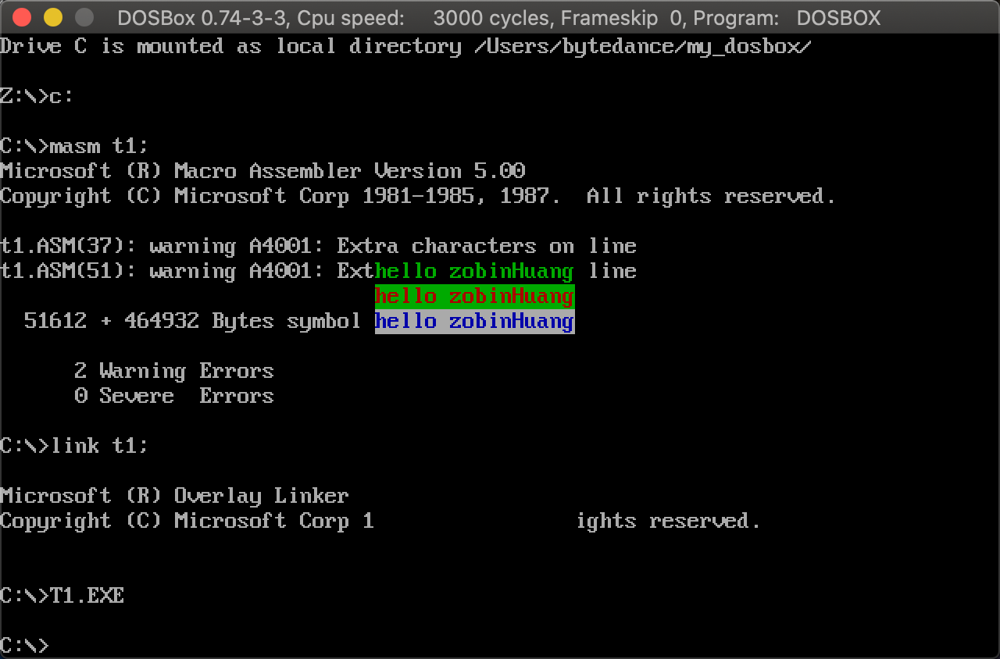
  </div>

</div>


<h2><a name="7_ret">7. RET 和 RETF 指令</a></h2> 
<div class="div_learning_post">
  <p>
  &nbsp;&nbsp;&nbsp;&nbsp;当我们执行 ret 指令时，相当于执行了 "pop ip" 指令。当我们执行 retf 指令时，相当于执行了 "pop ip" 和 "pop cs" 指令。因此，这意味着 ret 和 retf 指令不仅会获取栈段中的数据，同时也会向 "pop" 指令那样影响栈顶指针。并且，对于 retf 指令，由于它 pop 的顺序是先 pop ip 后 pop cs，因此注意我们入栈的时候应该先入 cs 后入 ip。

  <p>
  &nbsp;&nbsp;&nbsp;&nbsp;回顾我们在 <a href="#2_jmp_4">段间转移 (远转移)</a> 中使用 "jmp dword ptr [内存单元地址]" 修改 cs 和 ip 寄存器的操作，通过 ret 和 retf 指令，我们也能修改这两个代码段寄存器。下面我们给出一个例子：

  <div align="center">
    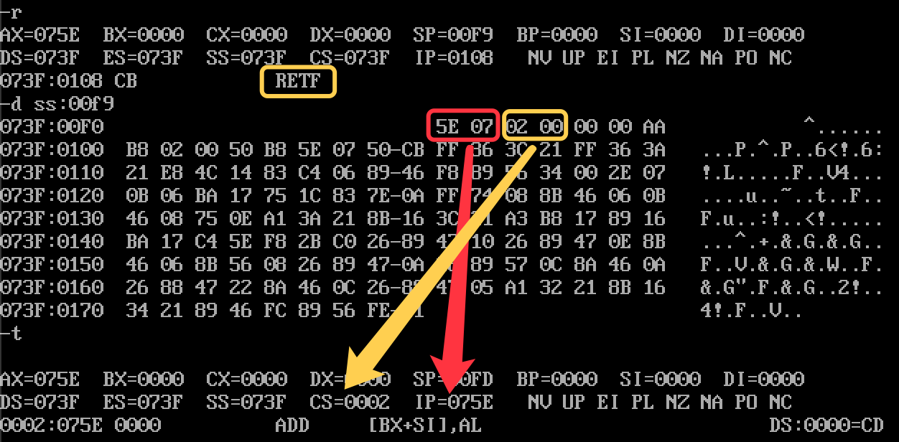
  </div>
</div>

<h2><a name="8_call">8. CALL 指令</a></h2> 
<div class="div_learning_post">
  <h3><a name="8_call_1">8.1 CALL 指令的运行流程</a></h3> 
  <p>
  &nbsp;&nbsp;&nbsp;&nbsp;结合我们理解的 CPU 执行指令的过程，我们现在来看一下 CALL 指令的工作流程：
  <ol>
    <li>CPU 从 CS:IP 所组合出来的地址读取指令，读到指令缓存器中</li>
    <li>IP = IP + 所读指令的字节数</li>
    <li>push IP 寄存器中的值到栈段中</li>
    <li>jmp near ptr <font color="blue">16 位段内转移</font>到标号处</li>
    <li>转移到标号出后继续正常执行指令</li>
  </ol>

  <p>
  &nbsp;&nbsp;&nbsp;&nbsp;注意 call 指令并不支持段内短转移(i.e. 8位转移)。下面我们顺势来看一下 call 指令的运行原理，其实和上面的跳转指令一样，都是使用了位移的方法。我们有如下代码：

  <figure class="highlight bash"><table><tr><td class="gutter"><pre><span class="line">1</span><br><span class="line">2</span><br><span class="line">3</span><br><span class="line">4</span><br><span class="line">5</span><br><span class="line">6</span><br><span class="line">7</span><br><span class="line">8</span><br><span class="line">9</span><br><span class="line">10</span><br><span class="line">11</span><br><span class="line">12</span><br><span class="line">13</span><br></pre></td><td class="code"><pre><span class="line">code segment</span><br><span class="line">    start:  mov ax, data</span><br><span class="line">            mov ds, ax</span><br><span class="line">            </span><br><span class="line">            call s</span><br><span class="line"></span><br><span class="line">            db 8 dub (0)</span><br><span class="line"></span><br><span class="line">    s:      mov ax, 0003H</span><br><span class="line"></span><br><span class="line">            mov ax, 4C00H</span><br><span class="line">            int 21H</span><br><span class="line">code ends</span><br></pre></td></tr></table></figure>
  <p>
  &nbsp;&nbsp;&nbsp;&nbsp;我们来看一下机器码，我们观察到了段内近转移：

  <div align="center">
    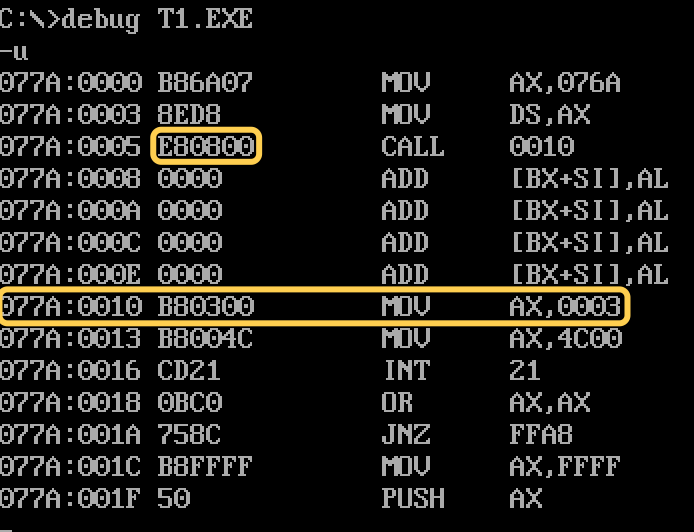
  </div>

  <p>
  &nbsp;&nbsp;&nbsp;&nbsp;我们也可以让 call 指令支持段间转移，形式是 "call far ptr [标号]"。在这种情况下，call 指令的运行流程为：

  <ol>
    <li>CPU 从 CS:IP 所组合出来的地址读取指令，读到指令缓存器中</li>
    <li>IP = IP + 所读指令的字节数</li>
    <li>push CS 寄存器中的值到栈段中</li>
    <li>push IP 寄存器中的值到栈段中</li>
    <li>jmp far ptr <font color="blue">32 位段间转移</font>到标号处</li>
    <li>转移到标号出后继续正常执行指令</li>
  </ol>

  <h3><a name="8_call_2">8.2 CALL 跳转地址在寄存器中的情况</a></h3>
  <p>
  &nbsp;&nbsp;&nbsp;&nbsp;call 指令也可以用于跳转到存储与寄存器中的地址。由于 8086 寄存器仅仅为 16 位，所以 这种情况下的跳转只能是段内近转移。在这种情况下，call 指令的运行流程为：

  <ol>
    <li>CPU 从 CS:IP 所组合出来的地址读取指令，读到指令缓存器中</li>
    <li>IP = IP + 所读指令的字节数</li>
    <li>push IP 寄存器中的值到栈段中</li>
    <li>jmp 16位 reg</li>
    <li>转移后继续正常执行指令</li>
  </ol>

  <h3><a name="8_call_3">8.3 CALL 跳转地址在内存中的情况</a></h3> 
  <p>
  &nbsp;&nbsp;&nbsp;&nbsp;显然 call 指令的操作数也可以存储在内存中。也显然有两种情况：除了段内短转移以外的<b>段内近转移</b>和<b>段间转移</b>。

  <p>
  &nbsp;&nbsp;&nbsp;&nbsp;对于<b>段内近转移</b>，其运行流程如下：

  <ol>
    <li>CPU 从 CS:IP 所组合出来的地址读取指令，读到指令缓存器中</li>
    <li>IP = IP + 所读指令的字节数</li>
    <li>push IP 寄存器中的值到栈段中</li>
    <li>jmp word ptr [内存单元地址]</li>
    <li>转移到标号出后继续正常执行指令</li>
  </ol>

  <p>
  &nbsp;&nbsp;&nbsp;&nbsp;对于<b>段间转移</b>，其运行流程如下：

  <ol>
    <li>CPU 从 CS:IP 所组合出来的地址读取指令，读到指令缓存器中</li>
    <li>IP = IP + 所读指令的字节数</li>
    <li>push CS 寄存器中的值到栈段中</li>
    <li>push IP 寄存器中的值到栈段中</li>
    <li>jmp dword ptr [内存单元地址]</li>
    <li>转移到标号出后继续正常执行指令</li>
  </ol>

  <h3><a name="8_call_4">8.4 CALL 和 RET 的配合使用</a></h3> 
  <p>
  &nbsp;&nbsp;&nbsp;&nbsp;通过上面的内容我们知道，call 指令在跳转前把当前的 IP 值或者 CS:IP 值保存到栈中，而 ret 指令会将栈中的值取回到 IP 或者 CS:IP 寄存器中。这两个操作明显是相反的。这就是我们意识到，call 指令相当于一个函数调用，函数运行结束后，我们可以用 ret 来返回。举个例子如下：


  <figure class="highlight bash"><table><tr><td class="gutter"><pre><span class="line">1</span><br><span class="line">2</span><br><span class="line">3</span><br><span class="line">4</span><br><span class="line">5</span><br><span class="line">6</span><br><span class="line">7</span><br><span class="line">8</span><br><span class="line">9</span><br><span class="line">10</span><br><span class="line">11</span><br><span class="line">12</span><br><span class="line">13</span><br><span class="line">14</span><br><span class="line">15</span><br></pre></td><td class="code"><pre><span class="line">code segment</span><br><span class="line">    start:  mov ax, data</span><br><span class="line">            mov ds, ax</span><br><span class="line">            </span><br><span class="line">            call s</span><br><span class="line"></span><br><span class="line">            mov ds, ax</span><br><span class="line"></span><br><span class="line">            mov ax, 4C00H</span><br><span class="line">            int 21H</span><br><span class="line"></span><br><span class="line">    s:      mov ax, 0003H</span><br><span class="line">            ret <span class="comment">#函数段运行结束后将返回 Line 7 执行。</span></span><br><span class="line">            </span><br><span class="line">code ends</span><br></pre></td></tr></table></figure>
  <p>
  &nbsp;&nbsp;&nbsp;&nbsp;基于此，我们可以对我们在 <a href="/sec_learning/Tech_OS_And_Linux_Kernel/Assembly_Basic_5_Transition_Command/index.html#6_example">实验：向显存中写入数据</a> 编写的代码进行修改，将寄存器初始化、打印字符串分别作为一段函数来写，然后我们就可以通过 call 指令来实现打印不同的内容。

  <figure class="highlight bash"><table><tr><td class="gutter"><pre><span class="line">1</span><br><span class="line">2</span><br><span class="line">3</span><br><span class="line">4</span><br><span class="line">5</span><br><span class="line">6</span><br><span class="line">7</span><br><span class="line">8</span><br><span class="line">9</span><br><span class="line">10</span><br><span class="line">11</span><br><span class="line">12</span><br><span class="line">13</span><br><span class="line">14</span><br><span class="line">15</span><br><span class="line">16</span><br><span class="line">17</span><br><span class="line">18</span><br><span class="line">19</span><br><span class="line">20</span><br><span class="line">21</span><br><span class="line">22</span><br><span class="line">23</span><br><span class="line">24</span><br><span class="line">25</span><br><span class="line">26</span><br><span class="line">27</span><br><span class="line">28</span><br><span class="line">29</span><br><span class="line">30</span><br><span class="line">31</span><br><span class="line">32</span><br><span class="line">33</span><br><span class="line">34</span><br><span class="line">35</span><br><span class="line">36</span><br><span class="line">37</span><br><span class="line">38</span><br><span class="line">39</span><br><span class="line">40</span><br><span class="line">41</span><br><span class="line">42</span><br><span class="line">43</span><br><span class="line">44</span><br><span class="line">45</span><br><span class="line">46</span><br><span class="line">47</span><br><span class="line">48</span><br><span class="line">49</span><br><span class="line">50</span><br><span class="line">51</span><br><span class="line">52</span><br><span class="line">53</span><br><span class="line">54</span><br><span class="line">55</span><br><span class="line">56</span><br><span class="line">57</span><br><span class="line">58</span><br><span class="line">59</span><br><span class="line">60</span><br><span class="line">61</span><br><span class="line">62</span><br><span class="line">63</span><br><span class="line">64</span><br><span class="line">65</span><br><span class="line">66</span><br><span class="line">67</span><br><span class="line">68</span><br><span class="line">69</span><br></pre></td><td class="code"><pre><span class="line">code segment</span><br><span class="line">    start:  </span><br><span class="line"></span><br><span class="line">            call init_reg</span><br><span class="line"></span><br><span class="line">            <span class="comment">#设置屏幕位置</span></span><br><span class="line">            mov di, 160*10 + 30*2</span><br><span class="line">            <span class="comment">#设置字符 ASCII 码访问偏移量</span></span><br><span class="line">            mov si, 0</span><br><span class="line">            <span class="comment">#设置字符属性访问偏移量</span></span><br><span class="line">            mov bx, 16</span><br><span class="line">            call show_str</span><br><span class="line"></span><br><span class="line">            mov ax, 4C00H</span><br><span class="line">            int 21H</span><br><span class="line"></span><br><span class="line"><span class="comment"># 显示函数</span></span><br><span class="line">show_str:   mov cx, 3</span><br><span class="line"></span><br><span class="line">sw_line:    <span class="comment">#嵌套循环，暂存入栈</span></span><br><span class="line">            push bx</span><br><span class="line">            push cx</span><br><span class="line">            push si</span><br><span class="line">            push di</span><br><span class="line"></span><br><span class="line">            <span class="comment">#设置显示字符串 16 个字符的循环限制</span></span><br><span class="line">            mov cx, 16</span><br><span class="line"></span><br><span class="line">            <span class="comment">#初始化 dx，我们的字符和属性要在 dx 中完成组装</span></span><br><span class="line">            mov dx, 0</span><br><span class="line"></span><br><span class="line">            <span class="comment">#获取属性</span></span><br><span class="line">            mov dh, ds:[bx]</span><br><span class="line">            </span><br><span class="line">show_row:   <span class="comment">#获取字符</span></span><br><span class="line">            mov dl, ds:[si]</span><br><span class="line">            <span class="comment">#设置字符和属性</span></span><br><span class="line">            mov es:[di], dx</span><br><span class="line">            add di, 2</span><br><span class="line">            inc si</span><br><span class="line">            loop show_row</span><br><span class="line"></span><br><span class="line">            <span class="comment">#内部循环结束，寄存器值出栈</span></span><br><span class="line">            pop di</span><br><span class="line">            pop si</span><br><span class="line">            pop cx</span><br><span class="line">            pop bx</span><br><span class="line"></span><br><span class="line">            <span class="comment">#添加一行</span></span><br><span class="line">            add di, 160</span><br><span class="line"></span><br><span class="line">            <span class="comment">#修改属性</span></span><br><span class="line">            inc bx</span><br><span class="line"></span><br><span class="line">            loop sw_line</span><br><span class="line"></span><br><span class="line">            ret</span><br><span class="line"></span><br><span class="line"><span class="comment"># 寄存器初始化函数</span></span><br><span class="line">init_reg:   <span class="comment">#设置数据段</span></span><br><span class="line">            mov ax, data</span><br><span class="line">            mov ds, ax</span><br><span class="line">            </span><br><span class="line">            <span class="comment">#设置显存区域位置</span></span><br><span class="line">            mov bx, 0B800H</span><br><span class="line">            mov es, bx</span><br><span class="line">            ret</span><br><span class="line"></span><br><span class="line">code ends</span><br></pre></td></tr></table></figure>
  <p>
  &nbsp;&nbsp;&nbsp;&nbsp;注意到我们在 Line 6 - Line 11 的地方把设置数据从哪里来和数据到哪里去的寄存器配置放在了函数外面，这里可以理解为把函数的传参放在了函数外面，这样一来我们就能够在函数外面通过修改参数信息，来使得函数的复用能力更强。

  <p>
  &nbsp;&nbsp;&nbsp;&nbsp;我们再来看一个问题，在内存中读取字符串并显示在屏幕上，遇到内存单元为 0 时停止读取。我们发现这个问题是和 0 与跳转有关系的问题，自然想到能用 jcxz 来解决，代码如下：

  <figure class="highlight bash"><table><tr><td class="gutter"><pre><span class="line">1</span><br><span class="line">2</span><br><span class="line">3</span><br><span class="line">4</span><br><span class="line">5</span><br><span class="line">6</span><br><span class="line">7</span><br><span class="line">8</span><br><span class="line">9</span><br><span class="line">10</span><br><span class="line">11</span><br><span class="line">12</span><br><span class="line">13</span><br><span class="line">14</span><br><span class="line">15</span><br><span class="line">16</span><br><span class="line">17</span><br><span class="line">18</span><br><span class="line">19</span><br><span class="line">20</span><br><span class="line">21</span><br><span class="line">22</span><br><span class="line">23</span><br><span class="line">24</span><br><span class="line">25</span><br><span class="line">26</span><br><span class="line">27</span><br><span class="line">28</span><br><span class="line">29</span><br><span class="line">30</span><br><span class="line">31</span><br><span class="line">32</span><br></pre></td><td class="code"><pre><span class="line">data segment</span><br><span class="line">db <span class="string">&#x27;Hello Zobin&#x27;</span>, 0</span><br><span class="line">data ends</span><br><span class="line"></span><br><span class="line">code segment</span><br><span class="line">start:  call init_reg</span><br><span class="line"></span><br><span class="line">        mov si, 0</span><br><span class="line">        mov di, 160*10 + 30*2</span><br><span class="line"></span><br><span class="line">        call show_str</span><br><span class="line"></span><br><span class="line"><span class="comment"># 显示字符串函数</span></span><br><span class="line">show_str:   mov cx, 0</span><br><span class="line">show:       mov cl, ds:[si]</span><br><span class="line">            jcxz stop_show</span><br><span class="line">            mov es:[di], cl</span><br><span class="line">            add di, 2</span><br><span class="line">            inc si</span><br><span class="line">            jmp show  <span class="comment"># 无限循环，直到 jcxz 跳出这个循环</span></span><br><span class="line">stop_show:  ret</span><br><span class="line"></span><br><span class="line"><span class="comment"># 寄存器初始化函数</span></span><br><span class="line">init_reg:   <span class="comment">#设置数据段</span></span><br><span class="line">            mov ax, data</span><br><span class="line">            mov ds, ax</span><br><span class="line">            </span><br><span class="line">            <span class="comment">#设置显存区域位置</span></span><br><span class="line">            mov bx, 0B800H</span><br><span class="line">            mov es, bx</span><br><span class="line">            ret</span><br><span class="line">code ends</span><br></pre></td></tr></table></figure>
  <h3><a name="8_call_5">8.5 寄存器旧值保护</a></h3>

  <p>
  &nbsp;&nbsp;&nbsp;&nbsp;我们现在把问题加大难度：我们现在要求显示 4 行字符串，而非 1 行。我们的代码将如下面所示：

  <figure class="highlight bash"><table><tr><td class="gutter"><pre><span class="line">1</span><br><span class="line">2</span><br><span class="line">3</span><br><span class="line">4</span><br><span class="line">5</span><br><span class="line">6</span><br><span class="line">7</span><br><span class="line">8</span><br><span class="line">9</span><br><span class="line">10</span><br><span class="line">11</span><br><span class="line">12</span><br><span class="line">13</span><br><span class="line">14</span><br><span class="line">15</span><br><span class="line">16</span><br><span class="line">17</span><br><span class="line">18</span><br><span class="line">19</span><br><span class="line">20</span><br><span class="line">21</span><br><span class="line">22</span><br><span class="line">23</span><br><span class="line">24</span><br><span class="line">25</span><br><span class="line">26</span><br><span class="line">27</span><br><span class="line">28</span><br><span class="line">29</span><br><span class="line">30</span><br><span class="line">31</span><br><span class="line">32</span><br><span class="line">33</span><br><span class="line">34</span><br><span class="line">35</span><br><span class="line">36</span><br><span class="line">37</span><br><span class="line">38</span><br><span class="line">39</span><br><span class="line">40</span><br><span class="line">41</span><br><span class="line">42</span><br><span class="line">43</span><br><span class="line">44</span><br><span class="line">45</span><br><span class="line">46</span><br><span class="line">47</span><br><span class="line">48</span><br><span class="line">49</span><br><span class="line">50</span><br><span class="line">51</span><br><span class="line">52</span><br><span class="line">53</span><br><span class="line">54</span><br><span class="line">55</span><br><span class="line">56</span><br><span class="line">57</span><br><span class="line">58</span><br><span class="line">59</span><br><span class="line">60</span><br><span class="line">61</span><br><span class="line">62</span><br><span class="line">63</span><br><span class="line">64</span><br><span class="line">65</span><br><span class="line">66</span><br><span class="line">67</span><br><span class="line">68</span><br><span class="line">69</span><br><span class="line">70</span><br><span class="line">71</span><br><span class="line">72</span><br><span class="line">73</span><br><span class="line">74</span><br></pre></td><td class="code"><pre><span class="line">data segment</span><br><span class="line">   <span class="comment">#123456789ABCDEF</span></span><br><span class="line">db <span class="string">&#x27;Hello Zobin 1 !&#x27;</span>, 0</span><br><span class="line">db <span class="string">&#x27;Hello Zobin 2 !&#x27;</span>, 0</span><br><span class="line">db <span class="string">&#x27;Hello Zobin 3 !&#x27;</span>, 0</span><br><span class="line">db <span class="string">&#x27;Hello Zobin 4 !&#x27;</span>, 0</span><br><span class="line"></span><br><span class="line"><span class="comment"># 上面四行数据的偏移</span></span><br><span class="line">dw 0, 15, 32, 2FH</span><br><span class="line"></span><br><span class="line">data ends</span><br><span class="line"></span><br><span class="line">code segment</span><br><span class="line">start:  </span><br><span class="line">            call init_reg</span><br><span class="line">            call show_four</span><br><span class="line"></span><br><span class="line">            mov ax, 4C00H</span><br><span class="line">            int 21H</span><br><span class="line"></span><br><span class="line">show_four:     </span><br><span class="line">            <span class="comment"># 数据段中，存储各行偏移量的那部分数据的偏移量</span></span><br><span class="line">            mov bx, 3DH</span><br><span class="line"></span><br><span class="line">            <span class="comment"># 设置数据要到哪去的初始值(显存偏移量起始位置)</span></span><br><span class="line">            mov di, 160*10 + 30*2</span><br><span class="line"></span><br><span class="line">            <span class="comment"># 一共有四行</span></span><br><span class="line">            mov cx, 4</span><br><span class="line"></span><br><span class="line">            </span><br><span class="line">show_one:   <span class="comment"># 设置读取位置</span></span><br><span class="line">            mov si, ds:[bx+0]</span><br><span class="line">            call show_str</span><br><span class="line">            add di, 160</span><br><span class="line">            add bx, 2</span><br><span class="line">            loop show_one</span><br><span class="line"></span><br><span class="line"></span><br><span class="line"><span class="comment"># 显示字符串函数</span></span><br><span class="line">show_str:   </span><br><span class="line">            <span class="comment"># 保护函数外写入这些寄存器的数据</span></span><br><span class="line">            push cx</span><br><span class="line">            push ds</span><br><span class="line">            push es</span><br><span class="line">            push si</span><br><span class="line">            push di</span><br><span class="line"></span><br><span class="line">            mov cx, 0</span><br><span class="line">show:       mov cl, ds:[si]</span><br><span class="line">            jcxz stop_show</span><br><span class="line">            mov es:[di], cl</span><br><span class="line">            add di, 2</span><br><span class="line">            inc si</span><br><span class="line">            jmp show  <span class="comment"># 无限循环，直到 jcxz 跳出这个循环</span></span><br><span class="line">stop_show:  </span><br><span class="line">            <span class="comment"># 恢复函数外写入这些寄存器的数据</span></span><br><span class="line">            pop di</span><br><span class="line">            pop si</span><br><span class="line">            pop es</span><br><span class="line">            pop ds</span><br><span class="line">            pop cx</span><br><span class="line">            ret</span><br><span class="line"></span><br><span class="line"><span class="comment"># 寄存器初始化函数</span></span><br><span class="line">init_reg:   <span class="comment">#设置数据段</span></span><br><span class="line">            mov ax, data</span><br><span class="line">            mov ds, ax</span><br><span class="line">            </span><br><span class="line">            <span class="comment">#设置显存区域位置</span></span><br><span class="line">            mov bx, 0B800H</span><br><span class="line">            mov es, bx</span><br><span class="line">            ret</span><br><span class="line">code ends</span><br></pre></td></tr></table></figure>
  <p>
  &nbsp;&nbsp;&nbsp;&nbsp;注意到我们的方案是使用一个外层函数 show_four 去调用 show_str 函数 (Line 34)，show_four 函数中会有一个四次的循环，每次循环会显示一行数据。这里就会产生一个问题，我们在外层的四次循环中会使用到 cx 寄存器，我们在 show_str 中的 jcxz 指令也会使用到 cx 寄存器，这样一来就会产生冲突。因此可以注意到我们在 Line 43 - 47 的位置通过 push 的方式保护了我们在 show_str 中使用到的寄存器的原始值，然后在 Line 58 - 62 的位置通过 pop 的方式恢复了这些寄存器的原始值。这也就是我们这段代码想要强调的一个重点：在编写函数块代码的时候要养成保护寄存器原始值的习惯！

  <p>
  &nbsp;&nbsp;&nbsp;&nbsp;但是我们也不能够那么死板的去保护所有在函数中使用到的寄存器的值，我们考虑下面的例子：编写一个函数，实现计算一个数的立方的功能。我们的代码如下：

  <figure class="highlight bash"><table><tr><td class="gutter"><pre><span class="line">1</span><br><span class="line">2</span><br><span class="line">3</span><br><span class="line">4</span><br><span class="line">5</span><br><span class="line">6</span><br><span class="line">7</span><br><span class="line">8</span><br><span class="line">9</span><br><span class="line">10</span><br><span class="line">11</span><br><span class="line">12</span><br><span class="line">13</span><br><span class="line">14</span><br><span class="line">15</span><br><span class="line">16</span><br><span class="line">17</span><br><span class="line">18</span><br><span class="line">19</span><br><span class="line">20</span><br><span class="line">21</span><br><span class="line">22</span><br><span class="line">23</span><br><span class="line">24</span><br><span class="line">25</span><br><span class="line">26</span><br><span class="line">27</span><br><span class="line">28</span><br><span class="line">29</span><br></pre></td><td class="code"><pre><span class="line">data segment</span><br><span class="line">  db 0 dup(8)</span><br><span class="line">data ends</span><br><span class="line"></span><br><span class="line">code segment</span><br><span class="line">start:    mov ax, data</span><br><span class="line">          mov ds, ax</span><br><span class="line"></span><br><span class="line">          mov di, 0</span><br><span class="line"></span><br><span class="line">          mov bx, 5</span><br><span class="line">          call get_cube</span><br><span class="line"></span><br><span class="line">          mov es:[di+0], ax</span><br><span class="line">          mov es:[di+2], dx</span><br><span class="line"></span><br><span class="line">          mov ax, 4C00H</span><br><span class="line">          int 21H</span><br><span class="line"></span><br><span class="line">get_cube: </span><br><span class="line">          push bx</span><br><span class="line"></span><br><span class="line">          mov ax, bx  </span><br><span class="line">          mul bx  </span><br><span class="line">          mul bx  <span class="comment"># 这里存在疑问：上一行 mul 的结果存在 ax 和 dx 中，然后这里只使用 ax (低 16 位)进行计算？</span></span><br><span class="line"></span><br><span class="line">          pop bx</span><br><span class="line">          ret</span><br><span class="line">code ends</span><br></pre></td></tr></table></figure>
  <p>
  &nbsp;&nbsp;&nbsp;&nbsp;在上面的代码中，注意到虽然我们在 get_cube 函数中使用到了 bx, ax, dx(乘法结果的高 16 位存放在了 dx 中)，但是实际上我们只保护了 bx 寄存器。原因是如果我们对 ax 和 dx 寄存器也使用 push 和 pop 进行保护和恢复，则我们必须在 get_cube 函数内对乘法结果进行存储。这样一来，我们的 get_cube 函数的功能就不再单一，因此功能会变得混乱。我们完全可以不保护 ax 和 dx 寄存器，因为我们正是想使用 get_cube 函数去修改这两个寄存器的值。
</div>

<!--ref-->
<!--
<h2>附录：参考源</h2>
<div class="div_learning_post">
<p>

1. golang.org, <a target="_blank" rel="noopener" href="https://golang.org/cmd/go/#hdr-GOPATH_environment_variable">GOPATH environment variable</a>
</p>
</div>-->

</body>
      </div>
      
      
      
    </div>
    
  <ul class="breadcrumb">
          
            <li><a href="/sec_learning_backup/">SEC_LEARNING_BACKUP</a></li>
            <li><a href="/sec_learning_backup/Tech_OS_And_Linux_Kernel/">TECH_OS_AND_LINUX_KERNEL</a></li>
          <li>ASSEMBLY_BASIC_5_TRANSITION_COMMAND</li>
        
  </ul>

    
    
    


          </div>
          
    <div class="comments" id="valine-comments"></div>

<script>
  window.addEventListener('tabs:register', () => {
    let { activeClass } = CONFIG.comments;
    if (CONFIG.comments.storage) {
      activeClass = localStorage.getItem('comments_active') || activeClass;
    }
    if (activeClass) {
      let activeTab = document.querySelector(`a[href="#comment-${activeClass}"]`);
      if (activeTab) {
        activeTab.click();
      }
    }
  });
  if (CONFIG.comments.storage) {
    window.addEventListener('tabs:click', event => {
      if (!event.target.matches('.tabs-comment .tab-content .tab-pane')) return;
      let commentClass = event.target.classList[1];
      localStorage.setItem('comments_active', commentClass);
    });
  }
</script>

        </div>
          
  
  <div class="toggle sidebar-toggle">
    <span class="toggle-line toggle-line-first"></span>
    <span class="toggle-line toggle-line-middle"></span>
    <span class="toggle-line toggle-line-last"></span>
  </div>

  <aside class="sidebar">
    <div class="sidebar-inner">

      <ul class="sidebar-nav motion-element">
        <li class="sidebar-nav-toc">
          المحتويات
        </li>
        <li class="sidebar-nav-overview">
          عام
        </li>
      </ul>

      <!--noindex-->
      <div class="post-toc-wrap sidebar-panel">
      </div>
      <!--/noindex-->

      <div class="site-overview-wrap sidebar-panel">
        <div class="site-author motion-element" itemprop="author" itemscope itemtype="http://schema.org/Person">
    
  <p class="site-author-name" itemprop="name">Zhuobin Huang</p>
  <div class="site-description" itemprop="description">System Engineer</div>
</div>
  <div class="links-of-author motion-element">
      <span class="links-of-author-item">
        <a href="https://github.com/zobinHuang" title="GitHub → https:&#x2F;&#x2F;github.com&#x2F;zobinHuang" rel="noopener" target="_blank"><i class="fab fa-github fa-fw"></i>GitHub</a>
      </span>
      <span class="links-of-author-item">
        <a href="mailto:zobin1999@gmail.com" title="E-Mail → mailto:zobin1999@gmail.com" rel="noopener" target="_blank"><i class="fa fa-envelope fa-fw"></i>E-Mail</a>
      </span>
      <span class="links-of-author-item">
        <a href="https://www.weibo.com/u/2861056530" title="Weibo → https:&#x2F;&#x2F;www.weibo.com&#x2F;u&#x2F;2861056530" rel="noopener" target="_blank"><i class="fab fa-weibo fa-fw"></i>Weibo</a>
      </span>
      <span class="links-of-author-item">
        <a href="https://twitter.com/HwangZobin" title="Twitter → https:&#x2F;&#x2F;twitter.com&#x2F;HwangZobin" rel="noopener" target="_blank"><i class="fab fa-twitter fa-fw"></i>Twitter</a>
      </span>
  </div>


      </div>
        <div class="back-to-top motion-element">
          <i class="fa fa-arrow-up"></i>
          <span>0%</span>
        </div>

    </div>
  </aside>
  <div id="sidebar-dimmer"></div>


      </div>
    </main>

    <footer class="footer">
      <div class="footer-inner">
        

        
  <div class="beian"><a href="https://beian.miit.gov.cn/" rel="noopener" target="_blank">粤ICP备2021044371号 </a>
  </div>

<div class="copyright">
  
  &copy; 2017 – 
  <span itemprop="copyrightYear">2022</span>
  <span class="with-love">
    <i class="fa fa-guitar"></i>
  </span>
  <span class="author" itemprop="copyrightHolder">Zhuobin Huang</span>
</div>

        


      </div>
    </footer>
  </div>

  
  <script src="/lib/anime.min.js"></script>
  <script src="/lib/velocity/velocity.min.js"></script>
  <script src="/lib/velocity/velocity.ui.min.js"></script>

<script src="/js/utils.js"></script>

<script src="/js/motion.js"></script>


<script src="/js/schemes/pisces.js"></script>


<script src="/js/next-boot.js"></script>

<script src="/js/bookmark.js"></script>


  
  <script>
    (function(){
      var canonicalURL, curProtocol;
      //Get the <link> tag
      var x=document.getElementsByTagName("link");
		//Find the last canonical URL
		if(x.length > 0){
			for (i=0;i<x.length;i++){
				if(x[i].rel.toLowerCase() == 'canonical' && x[i].href){
					canonicalURL=x[i].href;
				}
			}
		}
    //Get protocol
	    if (!canonicalURL){
	    	curProtocol = window.location.protocol.split(':')[0];
	    }
	    else{
	    	curProtocol = canonicalURL.split(':')[0];
	    }
      //Get current URL if the canonical URL does not exist
	    if (!canonicalURL) canonicalURL = window.location.href;
	    //Assign script content. Replace current URL with the canonical URL
      !function(){var e=/([http|https]:\/\/[a-zA-Z0-9\_\.]+\.baidu\.com)/gi,r=canonicalURL,t=document.referrer;if(!e.test(r)){var n=(String(curProtocol).toLowerCase() === 'https')?"https://sp0.baidu.com/9_Q4simg2RQJ8t7jm9iCKT-xh_/s.gif":"//api.share.baidu.com/s.gif";t?(n+="?r="+encodeURIComponent(document.referrer),r&&(n+="&l="+r)):r&&(n+="?l="+r);var i=new Image;i.src=n}}(window);})();
  </script>


  

  

  


<script>
NexT.utils.loadComments(document.querySelector('#valine-comments'), () => {
  NexT.utils.getScript('//unpkg.com/valine/dist/Valine.min.js', () => {
    var GUEST = ['nick', 'mail', 'link'];
    var guest = 'nick,mail,link';
    guest = guest.split(',').filter(item => {
      return GUEST.includes(item);
    });
    new Valine({
      el         : '#valine-comments',
      verify     : false,
      notify     : false,
      appId      : 'y8LMT8RtOsi4JsbYHtNm2J7U-gzGzoHsz',
      appKey     : 'Q0cSe4rR8Iwr0Gs60rwWBsYa',
      placeholder: "Just go go",
      avatar     : 'mm',
      meta       : guest,
      pageSize   : '10' || 10,
      visitor    : false,
      lang       : '' || 'zh-cn',
      path       : location.pathname,
      recordIP   : false,
      serverURLs : ''
    });
  }, window.Valine);
});
</script>

</body>
</html>
